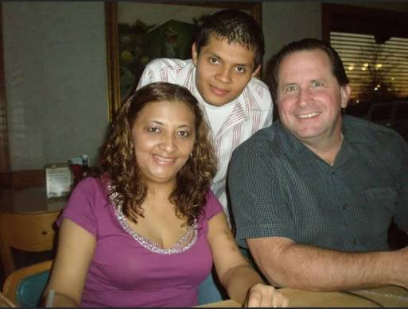

Tom Pearl
A life beyond the memes

.jpg)
Tom Pearl's life has been complicated and often painful. He grew up in a
large family, studied electronics and machine work, and spent much of his
adult life working in manufacturing. Years later, his name became known
across the internet for shocking videos and, more recently, viral memes.
But a person’s life is larger than the clips that travel online. This page
tells some of Tom’s story, including the difficult parts and the facts that
should not be left out.
Thomas Patrick Pearl II was born on March 23, 1959. He attended school in
Ohio and trained in electronics and machine work. He later worked as a
machine operator, assembler, and production inspector. His life also
included serious health and financial problems, and the loss of his wife,
Lorena, in February 2024.
Tom’s public story also includes a serious criminal conviction. In 2002,
he was convicted of possessing child sexual abuse material and was placed
on Florida’s sex-offender registry.
From 2012 to 2018, Pearl published explicit fetish videos online. According
to accounts attributed to him and people who knew him, he said the money
helped pay for his wife’s medical care. In 2026, old images and clips went
viral again. Some online attention reportedly turned into rumors and
unwanted visits near his home.
In November 2026, people close to Tom reportedly started a fundraiser
called “Help Tom Pearl Build a Better Life.” Its description says he is
dealing with serious heart problems, depression, and isolation, and that
donations are intended for care, daily needs, and a fence for privacy.
Please check the fundraiser and its organizers directly before donating.
A life is more than a viral clip.
Tom Pearl’s story is complicated.
Get the full context.
To learn about the reported fundraiser,
visit GoFundMe and verify the campaign.
PLEASE VERIFY THE CAMPAIGN BEFORE DONATING
Save Tom Pearl